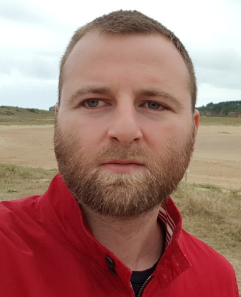

Noli SAPUNXHIU
41, rue Walvein
37000 TOURS
Tél. 06 56 89 87 02
E-mail: nolisap@gmail.com
Permis B - véhicule personne
DOMAINES DE COMPETENCES
- Identifier, collecter, chercher et modéliser des données de différentes sources
- Analyser des données via des moyens et outils spécifiques (mathématiques, statistiques, langages informatiques)
- Interpréter des données afin d'en tirer des tendances, aider à la prise de décision, optimiser les performances
- Créer, suivre et mettre à jour des dashboards comprenant des graphiques et indicateurs pertinents
- Procéder à des requêtes et automatisation
- Programmer dans un langage spécifique (SQL, Python, R)
- Effectuer des recommandations, propositions d'améliorations
- Collaborer avec les autres équipes Data
- Effectuer une veille technologique
- Analyser les besoins du client
- Planifier les étapes d'un projet
MAITRISE DES OUTILS BUREAUTIQUES ET LANGUES:
- HTML
- CSS
- Python
- AutoCad
- Anglais Bon Niveau
- Serbe Bon Niveau
- Albanais Bilingue
EXPERIENCES PROFESSIONNELLES
2020
Data Analyst
AVANCI, Tours
2014
Dessinateur
Atelier d'Architecture - HODEIB WISSAM, Tours
2013
Technicien d'Etudes du Bâtiment- stagiaire
Atelier d'Architecture - HODEIB WISSAM, Tours
BOILLE & ASSOCIES, Tours
2009 – 2012
Dessinateur- stagiaire
Atelier d'Architecture - HODEIB WISSAM, Tours
BOILLE & ASSOCIES, Tours
2004 – 2008
Collaborateur d’architecte
ANARCH – Pristina, Kosovo
FORMATION
LOISIRS
- Football
- Tennis
- Littérature diverse